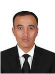
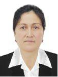
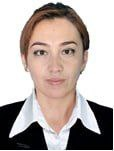
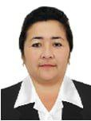

Andijon viloati Buloqboshi tumani
O’qituvchilar va O’quvchilar
Bizda har bir o’qituvchi malakali va oliy ma’lumotli, shu jumladan ularning ishlash prinsiplari quyidagichadir: ularning o’z xonalarida o’z kantentlari, video lavhalari va boshqa qo’shimcha vositalar orqali darsni tashkil etishlari. 90 minut davomida ular o’quvchilar bilan har taraflama ishlay olishlari. Ko’plab o’tkazilib keluvchi zakovat intelektual o’yini, kasbim-faxrim tanlovi, fanlar yuzasidan bellashuvlar va guruhlar o’rtasidagi sport musobaqalari, va xatta ijtimoiy tarmoqqa oid ko’plab tanlov va bellashular o’quvchilarni bilim olishga ilhomltiruvchi vositadir. Shu jumladan, har bir guruhda guruh rahbari, master va amaliyot rahbarining mavjudligi o’quvchilarni yanada yaxshiroq nazorat qilishni va intizmiy jihatdan rivojlanishning omili.
O’quvchilarimizdan o’z sohasi asosida turli xizmatlarni ko’rsatish orqali ishlab kelishmoqda, turli davlat va xalqaro universitetlarning talabasiga aylanishganlari bizning yutuqlarimizdan biridir. O’quvchilar taqriban 1000 nafarni tashkil etsalar, ulardan xozirda turli yo’nalishlar bo’yicha milliy va xalqaro sertifikatlarning sohiblari, turli fan va sport olimpiadalri g’oliblari mavjud.
Boshchilikdagi Rahbariyat

Iasaqov Xursandbek Ulug’bekovich
Direktor
(1985, Buloqboshida tavallud topgan) – 1-sonli kasb-hunar maktabining direktori. Andijon Muahndislik Iqtisodiyot institutini tamomlagan.

Mirzakamolov Javohir Rasuljon o’g’li
Direktor O’rinbosari
(1994, Buloqboshi tumanida tug’ilgan) – ishlab chiqarish ishlari bo’yicha direktor o’rinbosari. Andijon Mashinasozlik institutini tamomlagan.

Qambarova Nasibaxon Usmonovna
Xodimlar Bo’limi Inspektori
(1968, Buloqboshi tumanida tug’ilgan) – xodimlar bo’yicha direktor o’rinbosari. Andijon xisob buxgalteriya texnikumini tamomlagan.

Davronova Sayyoraxon Abdullayevna
O’quv Ishlari Bo’yicha Direktor O’rinbosari
(1987, Buloqboshi tumanida tug’ilgan) – o’quv ishlari bo’yicha direktor o’rinbosari. Andijon Mashinasozlik institutini tamomlagan.

Zikirova Marxabo Solijonovna
Yoshlar Ishlari Bo’yicha Direktor O’rinbosari
(1973, Quva tumanida tug’ilgan) – yoshlar ishlari bilan ishlash bo’yicha direktor o’rinbosari. Farg’ona Politexnika institutini hamda Andijon Davlat Universitetini tamomlagan.